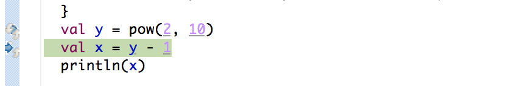

Yin-Yang
Concealing the Deep Embedding of DSLs
Vojin Jovanović Amir Shaikhha Sandro Stucki
Vladimir Nikolaev Christoph Koch Martin Odersky
Embedded Domain-Specific Languages
Domain-specific language embedded in a general purpose host language.
Shallow Embedding
Values in the embedded language directly represent values in the host language.
Direct Embedding
Shallow embedding that uses intrinsic constructs of the host language.
Direct Embedding - Low Performance
Due to abstraction overhead. For example, the Scala collections:
val v1 = Seq(1,2,3)
val v2 = Seq(4,5,6)
val sum = (v1 zip v2) map { case (x, y) => x + y }
val (min, max) = (sum.min, sum.max)
Deep Embedding
Values in the embedded language are symbolically represented by the values in the host language.
trait DSL {
// symbolic representation
trait Rep[+T]
case class Const(v: Int) extends Rep[Int]
case class Minus(l: Rep[Int], r: Rep[Int]) extends Rep[Int]
// implicit lifting
implicit def lift(i: Int): Rep[Int] = Const(i)
implicit class IntOps(l: Rep[Int]) {
def -(r: Rep[Int]): Rep[Int] = Minus(l, r)
}
}
new DSL {
val y: Rep[Int] = 1024
val x: Rep[Int] = y - 1
println(x)
}
Deep Embedding - Troubles Debugging
Stepping through shows the intermediate representation:
Deep Embedding - Cryptic Type Errors
Seemingly correct program:
Query(Coffees).map(c =>
if(c.origin == "CH")
"Good"
else
c.quality
)
Yields complicated type errors:
<error> Don’t know how to unpack Any to T and pack to G
<error> Not enough arguments in method
map: (implicit shape: scala.ql.lifted.Shape[Any,T,G])
:scala.slick.lifted.Query[G,T]
Deep Embedding - Unrestricted Host Language
Query(Coffees).map(c =>
if(c.origin == "CH") {
"Good"
} else {
c.quality
}
)
Direct Embedding vs Deep Embedding
| Deep | Direct | |
|---|---|---|
| User Friendly | X | ✓ |
| Fast | ✓ | X |
Insight
User friendliness matters during program development.
Performance matters in production.
Automatically translate a friendly direct embedding to a fast deep embedding before deployment!
Translation
Use Scala Macros to achieve:
- Language Virtualization - host language intrinsics do not correspond to DSL types.
- DSL Intrinsification - operations, constants, and types in the direct embedding do not correspond to the deep embedding.
Translation: Language Virtualization
| Direct | Deep | |
|---|---|---|
| Language Constructs Rompf et al. [HOSC 13'] |
||
| if(c) t else e | __if(c, t, e) | |
| while(c) b | __while(c, b) | |
AnyRef Methods |
||
| x.hashCode | infix_hashCode(x) | |
| a == b | infix_==(a, b) |
Translation: DSL Intrinsification
Converts DSL intrinsics from the direct embedding into their deep counterparts.
Translation: DSL Intrinsification
- Injects the whole program into the DSL component
- Explicitly handles constants and captured variables
- Translates types according to the configurable type transformer
| Direct | Deep |
|---|---|
| |
Type Translation: Generic Embedding
Function \(\tau_{\mathtt{arg}}\) applied for type arguments, \(\tau\) otherwise:
\[\begin{aligned} \newcommand{\ttname}{\tau} \newcommand{\ttarg}[1][]{\ttname_{\mathtt{arg}}(#1)} \newcommand{\ttother}[1][]{\ttname (#1)} &\ttother[T] & \; = \; & \; Rep [ T ] \\ &\ttarg[T] & \; = \; & T \end{aligned}\]
Type Translation: Eager Inlining
Function \(\tau_{\mathtt{arg}}\) applied for type arguments, \(\tau\) otherwise:
\[\begin{aligned} \newcommand{\ttname}{\tau} \newcommand{\ttarg}[1][]{\ttname_{\mathtt{arg}}(#1)} \newcommand{\ttother}[1][]{\ttname (#1)} %&\ttother[T_1 \Rightarrow T_2] & \; = \; & \ttother[T_1] \Rightarrow \ttother[T_2]\\ &\ttother[T_1 \Rightarrow T_2] & \; = \; & \text{Rep[}\ttarg[T_1]\text{]} \Rightarrow \text{Rep[}\ttarg[T_2]\text{]}\\ &\ttother[T] & \; = \; & \text{Rep[} T \text{]}, \; \text{otherwise} \\ &\ttarg[T\lbrack I_1,\ldots,I_n \rbrack] & \; = \; & T[\ttarg[I_1],\ldots,\ttarg[I_n]] \\ &\ttarg[T_1 \Rightarrow T_2] & \; = \; & \mathtt{error} \\ &\ttarg[T] & \; = \; & T, \; \text{otherwise} \\ % \text{if } T \notin \{T_1 \Rightarrow T_2, T[I_1,\ldots,I_n]\} \end{aligned}\]
Language Restriction
Direct embedding API can be richer than the deep embedding.
new QueryDSL {
this.Query(lift(Coffees)).map { c: Rep[T] =>
if(c.origin == lift("CH")) {
println("Due to Nestle's good import policies!")
lift("Good")
} else
c.quality
}
}
Language Restriction: Analysis
Analise weather operations in the direct embedding would compile with the deep embedding in a fine-grained way and report comprehensible error messages.
<error> Predef.println() is not supported by the DSL.
println("Due to good import quality!")
^
What about constructing a new DSL?
Deep Embedding Generation
Generate a deep embedding based on the direct embedding.
Foreach operation:
def scan(pred: T => Boolean): Query[T] = <scan-body>
Generate:
def scan[T: Manifest] // Deep Embedding Interface
(self : Rep[Query[T]], pred : ((Rep[T]) => Rep[Boolean])): Rep[Query[T]] =
QueryScan[T](self, pred) // IR Node (symbolic representation)
.atPhase(lowering) {
// lowering Rompf et al. [POPL 13'] (translated body of scan)
<translate(scan-body)>
}
Demo
Evaluation
- Compare DSL generation with Forge [GPCE 13']
- Use Yin-Yang for existing DSLs and measure effort
Yin-Yang vs Forge
| EDSL | Direct | Forge | Deep |
|---|---|---|---|
| OptiML | 1128 | 1090 | 5876 |
| OptiQL | 73 | 74 | 526 |
| Vector | 70 | 71 | 369 |
Adopting Yin-Yang for Slick
- 2 months of development
- ~1000 lines of code
- 50+ tests that cover the core functionality
Yin-Yang
Conceals the deep embedding by using reflection to translate the direct embedding to the deep embedding.
Easier to program DSLs for both DSL users and DSL authors.